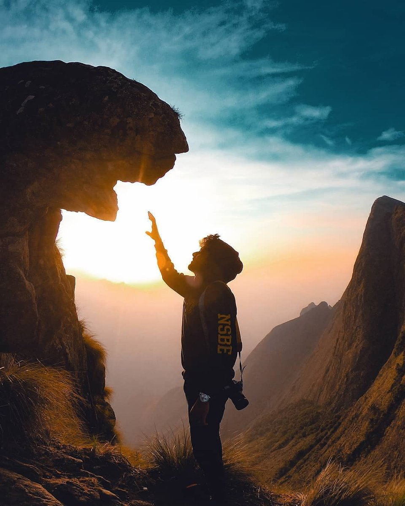
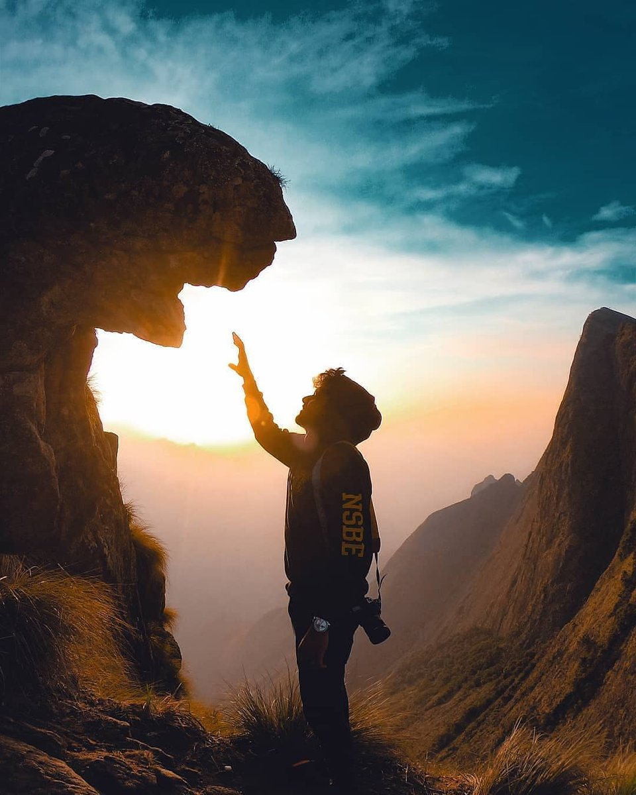
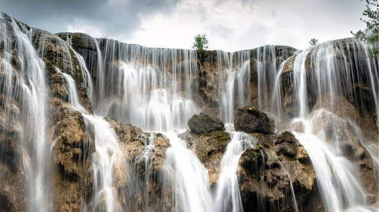
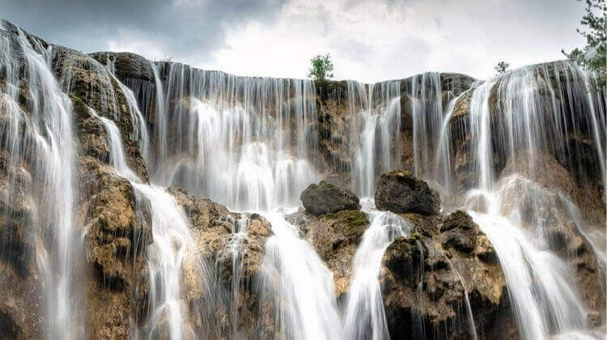

MEESAPULIMALA
Considered one of the best treks in Kerala, Meesapulimala is a Shangri-la for hikers. The peak bears a resemblance to a tiger and its whisker and hence the name Meesapulimala, derived from the local language. Resting at an altitude of 2,640 m, Meesapulimala is one of the highest peaks in Kerala. If nature is your thing, you’re in for a treat. The trail is much like a Rousseau painting coming to life. Chase the wild butterflies to the abyss, stroll along with the myriad rhododendron trees, toss your worries into the isle of clouds. You can even get some local company on the way, like the Wild Gaur or the Nilgiri Tahr. Sambar Deer and Sloth Bears have also been spotted in the area.

 

 
